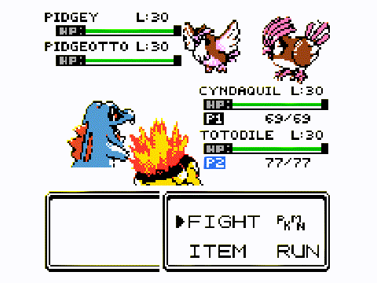
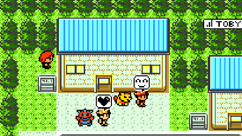
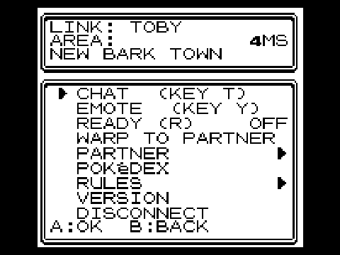
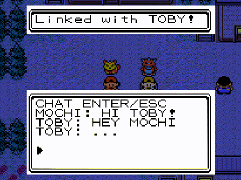

What it is
Two players, one Johto. You see each other walk, chat and send emotes, live the story's events together, trade through the Cable Club and fight trainers as a 2-vs-2 double battle, with HeartGold/SoulSilver's doubles rules.
Not an MMO: it's your own playthrough, with a friend in it. There's no server to sign up for — one of you hosts the session from inside the game, and the other joins over the local network or the internet (with ZeroTier).
It's a mod for the official Gen2Recomped: nothing to fork, just a zip you import in the launcher.
What makes it different
📖 The story, together
Events, items in the world and badges happen in both saves at once. Big battles ask your partner first.⚔️ 2-vs-2 doubles
Against the game's own trainers and gym leaders, in lockstep, with a foe AI written for doubles. You see which move your partner picked.🔗 Soul Link & more
The two-player Nuzlocke, a linked Day-Care, the Battle Tower in multi (Crystal), Mystery Gift and a shared Pokédex.💬 Chat & emotes
Live chat (T), emotes (Y or the number pad) and a high five. Works on phones too.🐾 Walking Pokémon
Your lead Pokémon follows you, HeartGold/SoulSilver-style, and your partner sees it.🌐 English & Spanish
Switch the mod's language in its options, or let it follow the game's.Screenshots




How to install
- Install the official Gen2Recomped and import your Gold, Silver or Crystal ROM.
- Download
PkMultiplayer-<version>.zipfrom the latest release. - In the launcher, open the MODS tab and press Import mod .zip (or drop the zip on the window). Make sure it's enabled.
- Both players need the mod, on the same version. The launcher tells you when there's a new one.
How to connect
| Same network | One player presses START → CO-OP ONLINE → HOST and gets a short code. The other goes to JOIN and types the code, or the host's IP. |
| Over the internet | Both join the same free ZeroTier network; the host's code already carries their ZeroTier IP. The port is UDP 7777. |
| If it fails | The menu says why and what to do (open UDP 7777 in the firewall, use the same mod version…). A dropped link reconnects on its own, and a battle waits for your partner to come back. |
FAQ
Is it free?
Yes. It's a free, non-commercial fan project, and the mod's own code is MIT-licensed.
Does it include the game or a ROM?
No. You need Gen2Recomped and your own cartridge dump. The mod ships no game code and no ROM data.
Which games?
Pokémon Gold, Silver and Crystal, and Red, Blue and Yellow, through Gen2Recomped.
Can more than two people play?
The co-op is for two. Up to four more players can visit the host's world to walk, chat and emote.